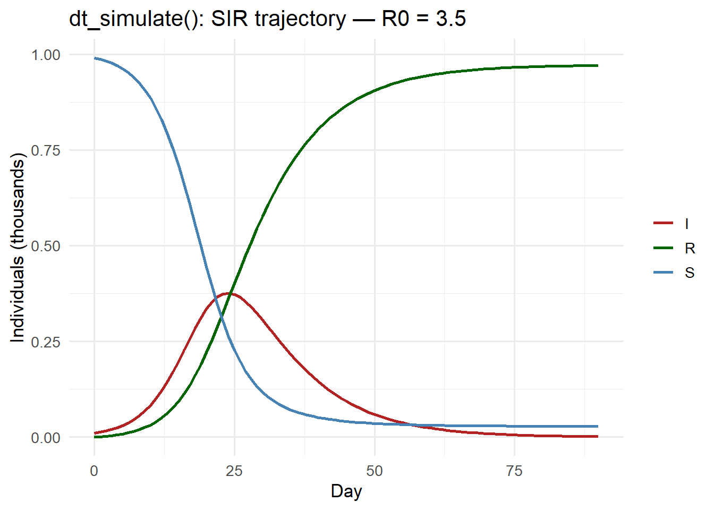

# Simulated API (replaces the real HTTP server for this demo)
.sim_api <- function(endpoint, body) {
if (endpoint == "/simulate") {
beta <- body$beta %||% 0.3
gamma <- body$gamma %||% 0.1
days <- body$days %||% 60
N <- body$S0 + body$I0
S <- body$S0; I <- body$I0; R <- 0; peak_I <- I; peak_day <- 0
traj <- data.frame(time = 0:days, S = NA, I = NA, R = NA)
traj[1, ] <- c(0, S, I, R)
for (d in seq_len(days)) {
inf <- beta * S * I / N; rec <- gamma * I
S <- S - inf; I <- I + inf - rec; R <- R + rec
if (I > peak_I) { peak_I <- I; peak_day <- d }
traj[d + 1, ] <- c(d, S, I, R)
}
list(R0 = round(beta / gamma, 2), peak_I = round(peak_I),
peak_day = peak_day, trajectory = traj)
}
}
# Null-coalescing operator
`%||%` <- function(a, b) if (!is.null(a)) a else bPublishing an R Client SDK for Your Digital Twin API
Analysts who live in R should not write raw HTTP calls. A well-packaged SDK lowers the adoption barrier and locks clients into your platform. Skill 8 of 20.
business skills
R package
SDK
httr2
API client
R
1 The analyst’s perspective
Your FastAPI service works. A district epidemiologist wants to use it from their weekly R script. Without an SDK they write:
library(httr2)
response <- request("https://api.your-domain.com/simulate") |>
req_method("POST") |>
req_auth_bearer_token(Sys.getenv("DT_API_KEY")) |>
req_body_json(list(location_id = "district_a", forecast_days = 14)) |>
req_perform()
result <- resp_body_json(response)That is four lines to learn, four places to make a mistake, and zero documentation. An SDK (1) wraps this into:
library(dtwins)
result <- dt_forecast("district_a", forecast_days = 14)One line. Auto-completed. Documented. Error messages in plain English.
2 Package structure
A minimal SDK has this layout:
dtwins/
├── DESCRIPTION
├── NAMESPACE
├── R/
│ ├── auth.R ← API key management
│ ├── simulate.R ← dt_simulate()
│ ├── forecast.R ← dt_forecast()
│ ├── observations.R ← dt_get_obs(), dt_push_obs()
│ └── utils.R ← internal helpers
├── tests/
│ └── testthat/
│ └── test-simulate.R
└── man/
└── (auto-generated by roxygen2)3 Building the core functions
We implement a fully working SDK that calls a simulated in-memory server for demonstration. In production, replace BASE_URL with your real endpoint.
# -- Authentication --
dt_auth <- function(api_key = NULL) {
key <- api_key %||% Sys.getenv("DT_API_KEY", unset = NA)
if (is.na(key) || nchar(key) == 0) {
stop("No API key found. Set DT_API_KEY environment variable or pass api_key=.")
}
invisible(key)
}
# -- Simulate endpoint --
#' Run an SIR simulation
#'
#' @param S0 Initial susceptibles
#' @param I0 Initial infectious
#' @param beta Transmission rate (per day)
#' @param gamma Recovery rate (per day)
#' @param days Simulation length in days
#' @return A list with R0, peak_I, peak_day, and trajectory data frame
dt_simulate <- function(S0 = 9900, I0 = 100, beta = 0.3,
gamma = 0.1, days = 60) {
if (beta <= 0 || beta >= 5)
stop("`beta` must be between 0 and 5")
if (gamma <= 0 || gamma >= 1)
stop("`gamma` must be between 0 and 1")
if (days < 1 || days > 365)
stop("`days` must be between 1 and 365")
# In production: make HTTP request
# req <- request(BASE_URL) |> req_url_path("/simulate") |>
# req_auth_bearer_token(dt_auth()) |>
# req_body_json(list(S0=S0,I0=I0,beta=beta,gamma=gamma,days=days)) |>
# req_perform()
# resp_body_json(req)
# Demo: call simulated API
.sim_api("/simulate", list(S0 = S0, I0 = I0, beta = beta,
gamma = gamma, days = days))
}# Client code — what the end user sees
result <- dt_simulate(S0 = 9900, I0 = 100, beta = 0.35, gamma = 0.1, days = 90)
cat(sprintf("R0 = %.1f | Peak: %d infectious on day %d\n",
result$R0, result$peak_I, result$peak_day))R0 = 3.5 | Peak: 3757 infectious on day 24library(ggplot2)
library(tidyr)
traj_long <- pivot_longer(result$trajectory, c(S, I, R),
names_to = "compartment", values_to = "count")
ggplot(traj_long, aes(x = time, y = count / 10000,
colour = compartment)) +
geom_line(linewidth = 1) +
scale_colour_manual(values = c(S = "steelblue", I = "firebrick",
R = "darkgreen"), name = NULL) +
labs(x = "Day", y = "Individuals (thousands)",
title = paste0("dt_simulate(): SIR trajectory — R0 = ", result$R0)) +
theme_minimal(base_size = 13)
4 Error handling: informative messages
Good SDK errors are better than raw HTTP errors:
safe_simulate <- function(...) {
tryCatch(
dt_simulate(...),
error = function(e) {
# Wrap to give context
stop(sprintf(
"dt_simulate() failed: %s\nCheck your parameters and API key.",
conditionMessage(e)
), call. = FALSE)
}
)
}
# Trigger a validation error
tryCatch(
safe_simulate(beta = -0.5),
error = function(e) cat("Error caught:", conditionMessage(e), "\n")
)Error caught: dt_simulate() failed: `beta` must be between 0 and 5
Check your parameters and API key. 5 Publishing the package
Once the package is ready (1):
# Generate documentation from roxygen2 comments
devtools::document()
# Run tests
devtools::test()
# Build package website
pkgdown::build_site()
# Submit to CRAN (or r-universe for faster turnaround)
devtools::check() # must be clean
devtools::release()For enterprise clients who cannot use CRAN, publish on a private r-universe page or as a GitHub release:
install.packages("dtwins",
repos = c("https://your-org.r-universe.dev", getOption("repos")))6 Why an SDK is a business asset
- Stickiness — analysts build workflows around your functions, not raw HTTP; switching requires rewriting code
- Discovery —
?dt_simulateshows documentation in the IDE; analysts explore features they would never find in API docs - Trust — a polished CRAN package signals engineering quality (2)
- Support reduction — good error messages and examples halve the number of “how do I call this?” emails
7 References
1.
Wickham H. R packages: Organize, test, document, and share your code [Internet]. Sebastopol, CA: O’Reilly Media; 2015. Available from: https://r-pkgs.org
2.
Wickham H, Hesselberth J, Salmon M. Pkgdown: Make static HTML documentation for a package [Internet]. 2022. Available from: https://CRAN.R-project.org/package=pkgdown